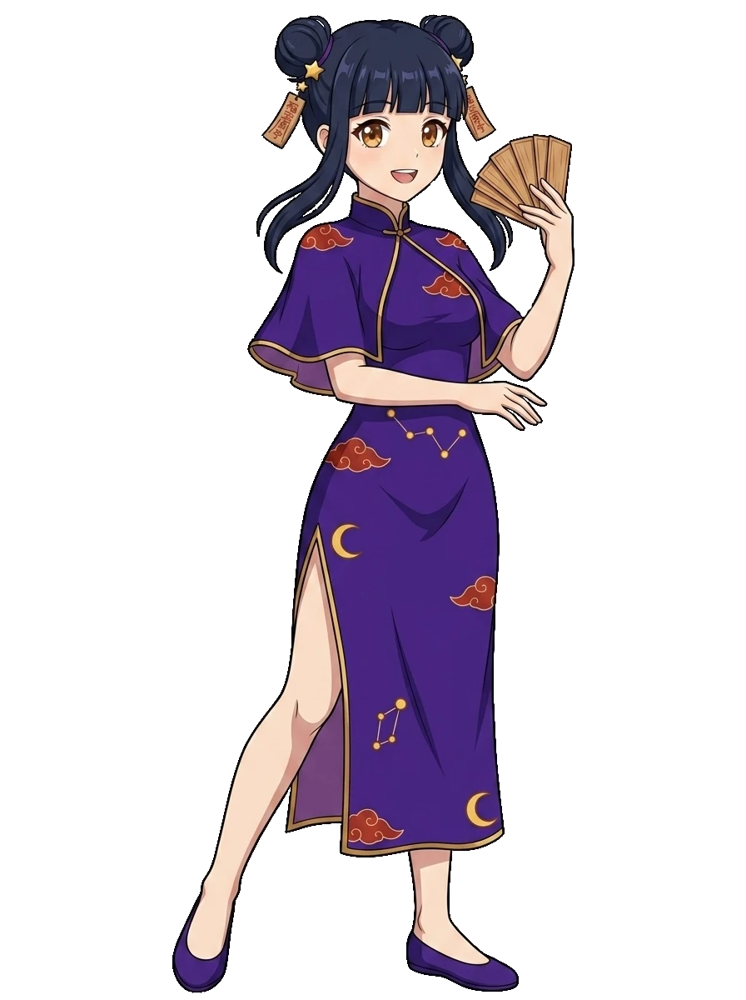

占い館の住み込み見習い
まお
運河沿いの町の、由緒ある占い館に住み込みで働く見習い。神秘的に構えたりせず、 一緒に学んで寄り添う、まっすぐで素直ながんばり屋です。
- 性格真面目・まっすぐ・素直・優しい
- 一人称わたし
- 好きな役一気通貫（イッキツウカン）
- 使い魔ココ（猫・気だるげな毒舌家）
- モチーフ符（お札）／ 月・星
どんな子？
占いと神秘の気配をまとった、中華の町の女の子。 紺のツインお団子に金の三日月飾り、深い紫／夜紺に金縁のチャイナドレス。瞳は琥珀（アンバー）。 占いはほんのり神秘的だけれど、性格はあくまで素直でまっすぐです。
使い魔・ココ
相棒は黒猫のココ。中国語の「猫（māo）」がまおの名と重なる由来で、互いに呼び捨ての気安い間柄。 めんどくさがりで気だるげ、ボソッと毒舌だけれど、根は優しい隠れ世話焼き。しっかり者のまおと好対照です。
ヒントの担い手
ヒントは「ココがそっと示唆 → まおがひらめいて言葉にする」という語り口。 答え（役名・点数）は最後まで言わず、「ぼんやり→鮮明」へ少しずつ。 自分で気づく余地を残してくれる、プレッシャーをかけない教え方です。
← キャラクター一覧へ